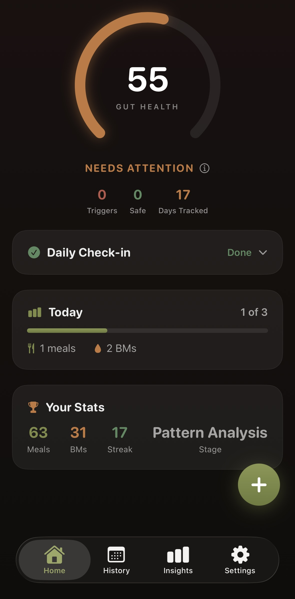
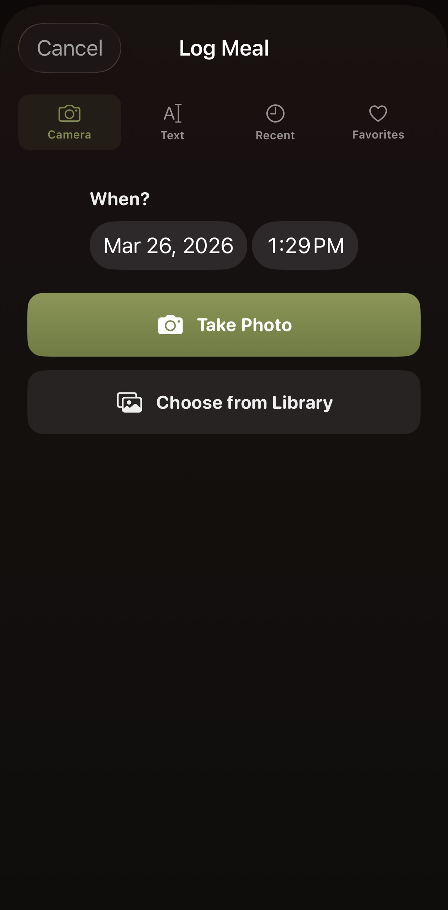
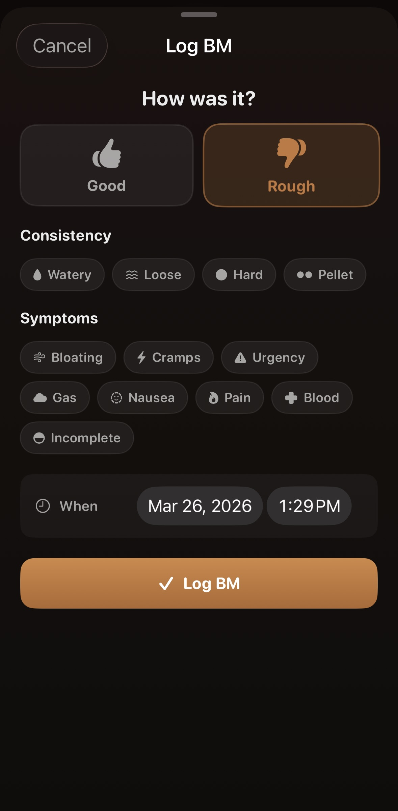
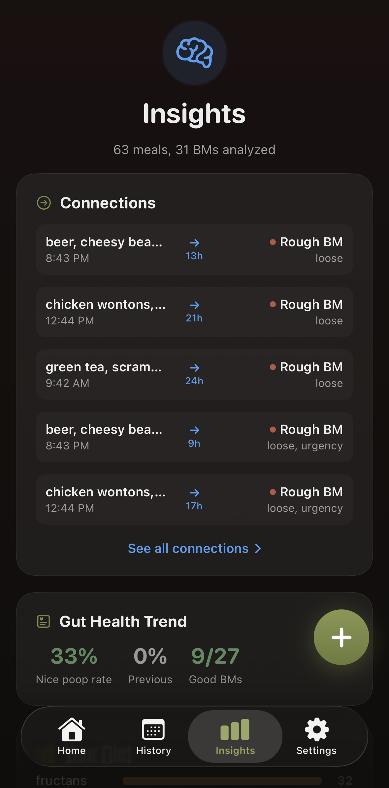

Snap a photo of your meal. Log how you feel. Tract's AI connects the dots and tells you exactly which ingredients are causing your symptoms.

1,000+
ingredients tracked
17
IBS categories analyzed
AI-powered
ingredient extraction
How it works
Snap a Photo
Take a photo of your plate and our AI identifies every ingredient automatically. No more scrolling through food databases — just point and shoot.


Track Your Gut
Good or bad, plus symptoms. Quick, private, and designed to be as frictionless as possible. Also track daily factors like stress, sleep, and hydration.
Get Answers
Tract finds statistical correlations between what you eat and how you feel. Trigger foods, safe foods, gut health score — insights unlock progressively as your data grows.

Features
Take a photo of your plate and our AI identifies every ingredient. No more scrolling through food databases — just point and shoot.
We don't just track meals — we track 1,000+ individual ingredients inside them. So we can tell you it's the garlic, not the pasta.
The more you log, the more confident the analysis becomes. Tract progressively unlocks deeper insights as your data grows.
Your gut health data stays yours. We don't sell your data, and all analysis happens on our secure servers — never shared with third parties.
Download Tract and start finding your food triggers today. It only takes a few days to see your first patterns.
Download on the App Store